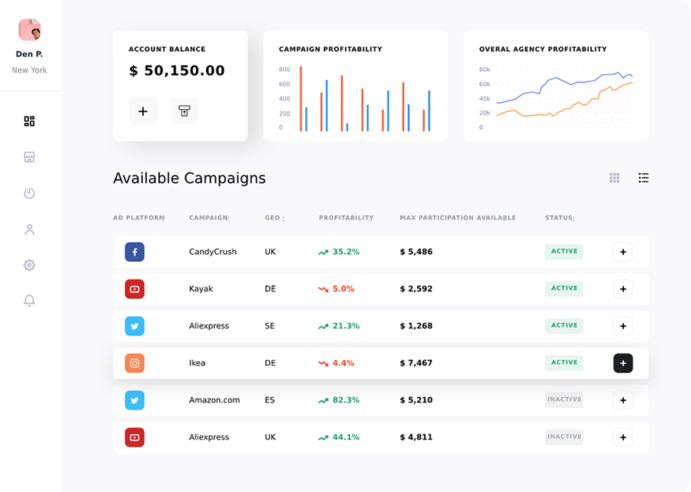
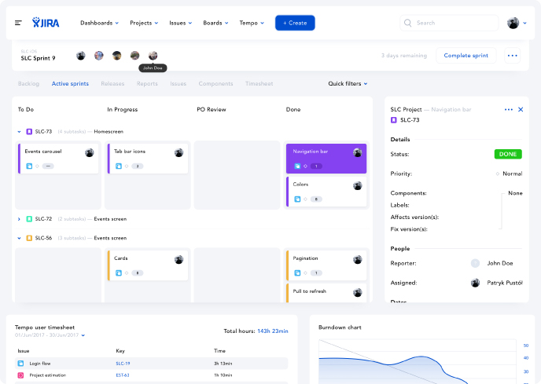

A Dartalla desenvolve software, automação e produtos digitais com foco em operação real. Com o Dartalla One, centralizamos rotinas financeiras, fiscais e operacionais em uma base única, pronta para evoluir com o seu negócio.
Conhecer o Dartalla One Falar com a DartallaA Dartalla combina produto, software e automação para reduzir fragmentação operacional e dar mais controle ao dia a dia da empresa.
Desenvolvemos sistemas aderentes à rotina da operação, com foco em processos, dados e execução prática.
Uma plataforma para centralizar rotinas financeiras, fiscais, operacionais e setoriais em um único ambiente.
Estruturamos fluxos para reduzir retrabalho manual, dependência de planilhas e operação pulverizada.
Construímos arquitetura modular para expandir a operação com novos fluxos, áreas e inteligência aplicada.

O Dartalla One nasce para unificar rotinas críticas e reduzir a dispersão entre ferramentas, controles paralelos e processos pouco confiáveis.
Financeiro, fiscal, documentos, controle operacional e rotinas específicas passam a conviver em uma mesma base de gestão.
A plataforma pode começar pelo núcleo mais urgente e evoluir por módulos, conforme a operação amadurece.
Não entregamos software para ficar à margem da empresa. Construímos estrutura para uso real, rotina real e crescimento real.
A Dartalla trabalha a partir da realidade da empresa: mapeia fluxos, estrutura a base do sistema e evolui a entrega com visão de produto.
Levantamos gargalos, rotinas críticas, exceções e dependências para definir o escopo certo da plataforma ou do módulo inicial.
Desenvolvemos, validamos e colocamos o sistema em uso com foco em aderência operacional, clareza de fluxo e confiabilidade.
Depois da entrada em operação, expandimos módulos, automações e camadas inteligentes conforme a necessidade do negócio.

Uma única base para acompanhar rotinas que antes ficavam espalhadas em vários sistemas e controles paralelos.
Fluxos desenhados para reduzir retrabalho, melhorar rastreabilidade e dar mais previsibilidade à operação.
Arquitetura modular para adicionar novas áreas, integrações e automações sem refazer a operação do zero.
Sem recorrer a prova social inventada: estes são os cenários em que a Dartalla normalmente gera mais valor.
Quando a empresa cresce apoiada em planilhas, sistemas isolados e exceções manuais, o Dartalla One ajuda a reorganizar a operação em uma plataforma mais controlável.
Se a gestão depende de múltiplas ferramentas sem continuidade entre si, a prioridade deixa de ser comprar mais uma solução e passa a ser consolidar a base operacional.
Nem toda operação cabe em um pacote fechado. A Dartalla combina plataforma própria, módulos e desenvolvimento sob medida quando a realidade do negócio exige.
Respostas diretas sobre o Dartalla One, implantação e o tipo de software que a Dartalla constrói.
É a plataforma principal da Dartalla para centralizar gestão e operação em uma base única, com módulos que podem cobrir financeiro, fiscal, documentos e fluxos operacionais.
Ele pode assumir funções típicas de um ERP, mas a proposta é mais flexível: uma plataforma unificada que acompanha a realidade operacional e evolui por módulos.
Sim. Quando necessário, combinamos módulos do Dartalla One com desenvolvimento sob medida e implantação gradual, começando pelo ponto mais crítico da operação.
O ponto de partida é um diagnóstico da operação para definir escopo, prioridades, dados envolvidos e a melhor sequência de implantação.
Editorial focado em operação, gestão e tecnologia aplicada ao funcionamento real das empresas.
Conheça o Dartalla One e veja como centralizar gestão, reduzir retrabalho e estruturar a próxima etapa da sua operação.